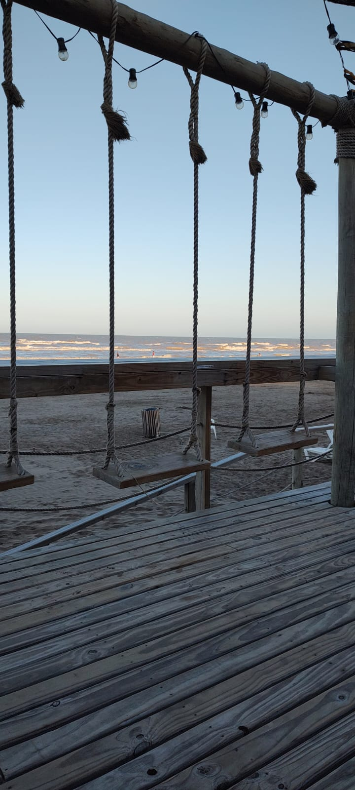
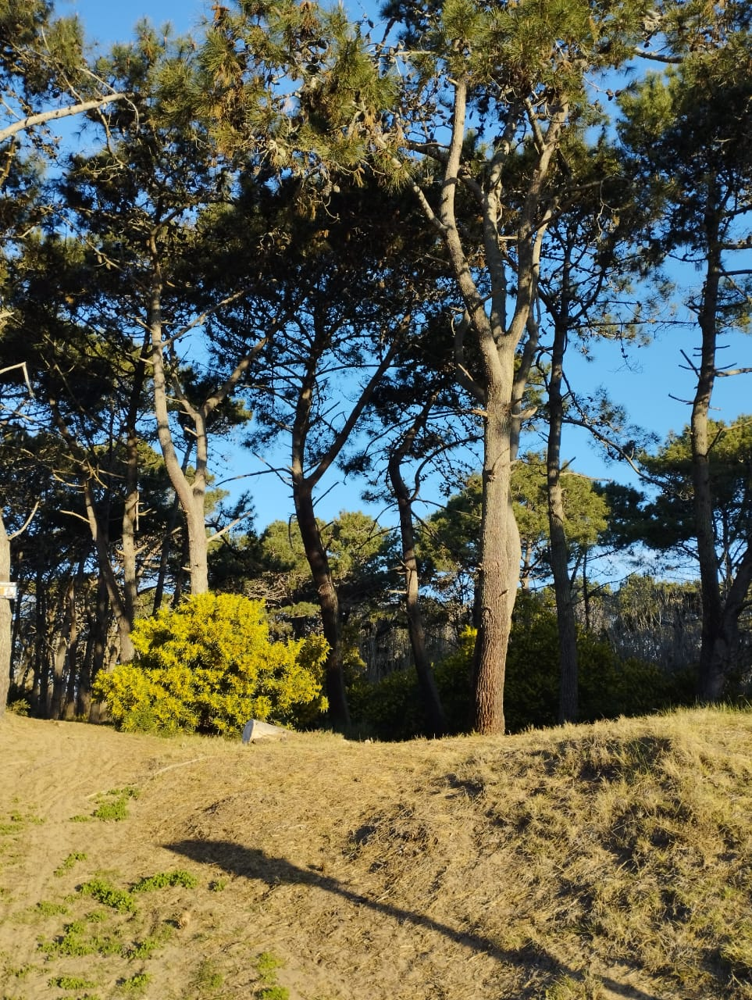
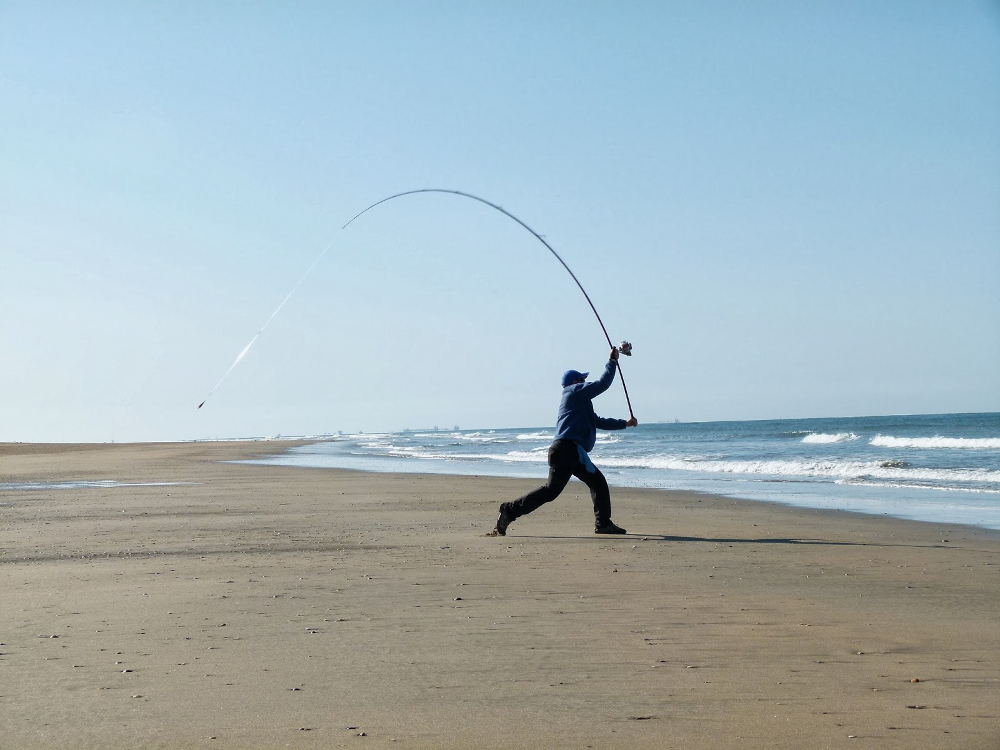
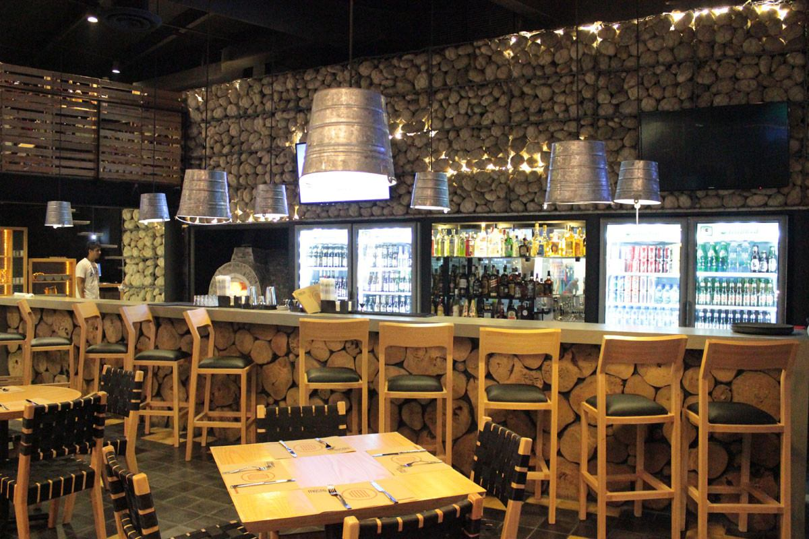
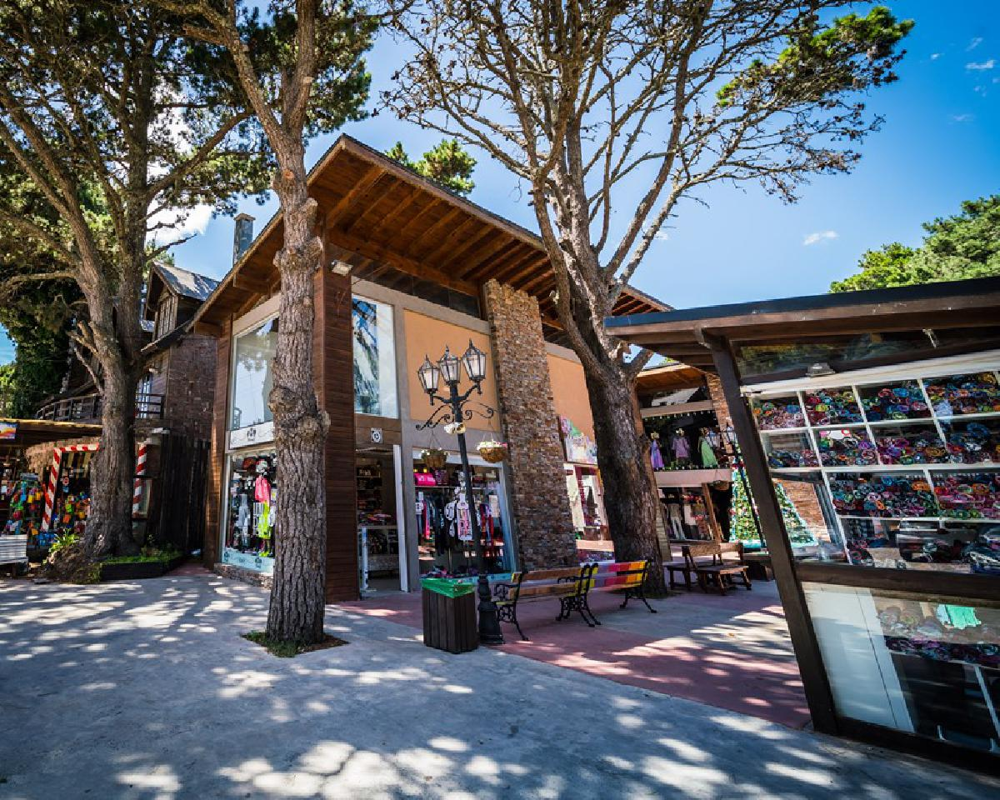
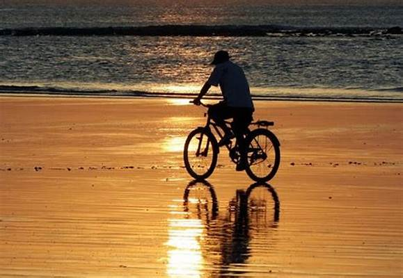

Actividades para hacer en
Costa del Este
Les damos la bienvenida a Costa del Este
Costa del Este, en Buenos Aires, Argentina, es una encantadora localidad costera perfecta para unas vacaciones tranquilas en la playa. A solo 360 km al sureste de Buenos Aires. Conocida por su encanto natural y su ambiente relajado, es el destino ideal para los que buscan disfrutar de unas vacaciones únicas. La preservación del medio ambiente es fundamental en Costa del Este. Rodeada de bosques y áreas verdes con senderos para caminar y andar en bicicleta, los visitantes pueden explorar y disfrutar plenamente del entorno. Además, encontrarás una gran variedad de restaurantes, cafeterías y tiendas locales con productos y artesanías únicas. En Costa del Este, las opciones de actividades son diversas. Ya sea que desees relajarte en la playa, explorar la naturaleza, pescar, ir de compras o disfrutar de la gastronomía. Este destino te ofrece una experiencia inolvidable. ¡Ven y descubre todo lo que Costa del Este tiene para ofrecerte!
Playas
Te invitamos a disfrutar de sus playas con arena suave y aguas refrescantes. creando el entorno perfecto para relajarte y tomar sol.
Caminatas
Descubre la belleza natural de Costa del Este a través de sus senderos, ideales para relajantes caminatas y explorar la flora y fauna local.
Pesca
Si eres amante de la pesca, te ofrecemos emocionantes oportunidades para disfrutar de este deporte, ya sea en la costa o en embarcaciones.
Gastronomía
Descubre una amplia variedad de opciones gastronómicas, desde delicias locales hasta platos internacionales, para satisfacer todos los paladares.
Centro Comercial
Sumérgete en la diversidad de tiendas y paseos de compras del centro comercial.
Ciclismo
Recorre los encantadores senderos en bicicleta y disfruta del paisaje natural mientras practicas tu deporte favorito.

Visita el parque temático Mundo Marino, ubicado en San Clemente del Tuyú, a aproximadamente 40 km de Costa del Este. Podrás disfrutar de espectáculos de delfines, leones marinos y orcas, así como explorar acuarios y aprender sobre la vida marina.

Disfrute de una jornada de relajación en las Termas Marinas de San Clemente, ubicadas a escasos 30 km aproximadamente de Costa del Este. Disfruta de un día dedicado a tu descanso y bienestar. Una experiencia única para recargar energías y cuidar de ti mismo.

Visita el Faro San Antonio en San Clemente del Tuyú, a unos 40 km de Costa del Este. Este icónico faro ofrece una vista panorámica del océano y sus alrededores. Puedes subir a la cima del faro y disfrutar de las impresionantes vistas.

Puedes realizar excursiones a localidades cercanas como San Clemente, Las Toninas, Santa Teresita, Mar del Tuyú, San Bernardo, Mar de Ajó, Pinamar, Cariló y Villa Gesell. Estas localidades ofrecen opciones de entretenimiento, tiendas, restaurantes y actividades recreativas.